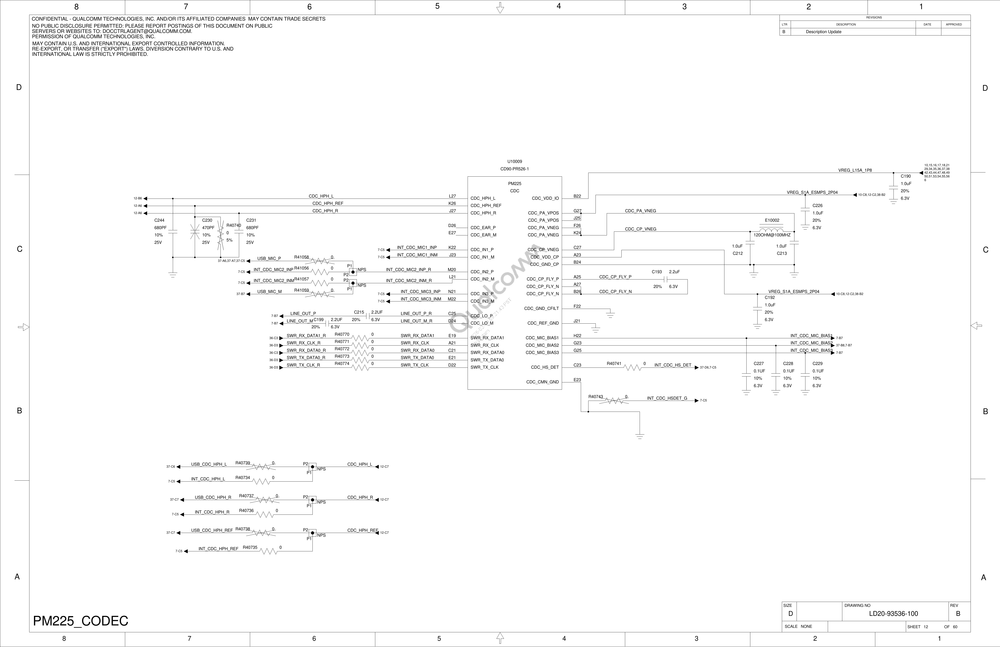
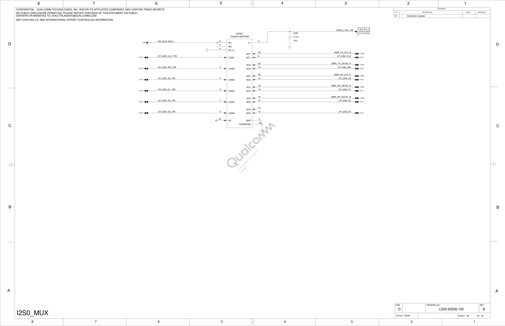

This version is intentionally visual-first: block diagrams + lightweight animation to show how audio and control move between ALSA, SoundWire master, and codec slaves.
SoundWire is an audio-focused bus (typically one master and one or more audio slaves) used to carry both control messages and time-scheduled audio data between SoC and codecs.
Think of I2C as sending one letter at a time (read/write register transactions), while SoundWire is like a timed metro schedule: every frame has reserved slots, and audio samples keep flowing in those slots continuously.
| Topic | I2C | SoundWire |
|---|---|---|
| Main purpose | Generic control/config bus | Audio transport + control on same link |
| Traffic style | Transaction-by-transaction | Frame/slot based, deterministic timing |
| Best fit | Sensor/PMIC register access | Codec/amp streaming with tight timing |
| In this Shikra doc | Useful for sideband controls | Bus behind SWR_*_CLK and SWR_*_DATA* nets |
This is a Shikra-specific simulated board view: SoC audio blocks, SoundWire links, I2C/GPIO control, and end devices (headset + speaker). It uses names from your DTS + schematic sheets.
codec@A040000 (mclk, npl, fsgen)codec@a078000 (mclk, npl)soundwire@a060000 (RX)soundwire@a080000 (VA_TX)R40770..R40774 (0R)wsa885x_i2c@c on I2C3interrupt-gpios + powerdown-gpiosVREG_L15A_1P8 path visible in schematic)swr_audio_cgcr)SWR_*_CLK/DATA*)CODEC_INT)| Connection Type | Shikra Signals/Nodes used here | Why it matters in debug |
|---|---|---|
| SoundWire physical links | SWR_RX_CLK, SWR_RX_DATA0/1, SWR_TX_CLK, SWR_TX_DATA0 |
Missing/incorrect lane activity leads to enum timeout or port mismatch logs |
| Reset/clock control | audiocorecc, swr_audio_cgcr, macro mclk/npl/fsgen |
Wrong sequencing breaks frame-gen transition and slave init completion |
| GPIO/IRQ control | CODEC_INT, WSA interrupt-gpios, powerdown-gpios |
Late/missing IRQ or bad gpio state blocks probe or runtime transitions |
| I2C sideband | i2c3 -> wsa885x_i2c@c |
Speaker amp configuration may fail even when SWR path is correct |
Orange and green packets represent PCM stream chunks moving from userspace to codec endpoints. This is the core path to keep in your head while debugging.
SoundWire bring-up problems happen when these two planes go out of sync: control says link is ready, but data path mapping is wrong (or vice versa).
SDW data ports/channels)
Direction example: CPU -> Codec Playback (RX at codec side)
enumeration, register ops, status, IRQ)
Direction example: status/commands around suspend-resume and stream prepare
| If you see... | Likely plane | First check |
|---|---|---|
din-ports (...) mismatch with controller (...) |
Data topology vs controller capability | Controller DT overrides and codec mapping assumptions |
swrm_wait_for_frame_gen_enabled... |
Control transition (frame-gen/link state) | Reset/PM/clock-stop sequence during runtime resume |
soundwire device init timeout (-110) |
Control completion not reached or attach path stalled | Slave attach + mapping + dependency links |
initialization_complete during probe.Userspace PCM
-> ASoC machine route
-> SWR master alloc ports
-> codec slave m_port_map
-> codec functional path (speaker/headphone/mic)Events fade in sequence to show order. If a later stage fails, go back one stage and verify state.
Typical timeout case: stages s2-s6 happen, but s7 does not complete before codec waits out.
This sequence mirrors your board view: LPASS SoundWire master drives clocks/data over board nets, PM225-side slave responds, then enumeration completes and codec init can proceed.
soundwire@a060000 (RX) / soundwire@a080000 (TX)R40770..R40774 (0R links)VREG_L15A_1P8)SWR_*_CLK nets
If timeout -110 appears, one of T1-T4 is usually broken: clock missing, mux state wrong,
or attach path never completes.
This view is built from public interface docs plus register/header definitions:
Linux SoundWire docs (Documentation/driver-api/soundwire/*),
upstream binding semantics (qcom,soundwire.yaml), and downstream SWR register headers.
RX highlight corresponds to hstart=0x03, hstop=0x06 example. TX row uses a compact early-slot window illustration.
| Signal / Formula | Meaning (datasheet-style) | Where taken from |
|---|---|---|
SWRM_MCP_FRAME_CTRL_BANKROW / COL |
Defines frame geometry used by transport windows | swr-mstr-registers.h, swr-mstr-ctrl.h |
SSP period = (bus_clk * 2) / ((row * col) * frame_sync) |
How transport cadence is derived in downstream SWR master logic | swr-mstr-ctrl.c (swrm_get_ssp_period()) |
qcom,ports-sinterval/offset/hstart/hstop |
Per-port transport window and sampling controls | Upstream binding qcom,soundwire.yaml |
Source: arch/arm64/boot/dts/qcom/shikra.dtsi. Values below are decoded by array index
so you can inspect port-by-port behavior exactly like a datasheet table.
| SWR1 (RX) Port | sinterval-low | offset1 | offset2 | hstart | hstop | word-length | lane-control | pack-mode | group-count |
|---|---|---|---|---|---|---|---|---|---|
| Port1 | 0x03 | 0x00 | 0x00 | 0xff | 0xff | 0x01 | 0x01 | 0xff | 0xff |
| Port2 | 0x1f | 0x00 | 0x00 | 0x03 | 0x06 | 0x07 | 0x00 | 0x00 | 0xff |
| Port3 | 0x1f | 0x0b | 0x0b | 0xff | 0xff | 0x04 | 0x00 | 0x01 | 0xff |
| Port4 | 0x07 | 0x01 | 0x00 | 0xff | 0xff | 0xff | 0x00 | 0xff | 0xff |
| Port5 | 0x00 | 0x00 | 0x00 | 0xff | 0xff | 0xff | 0x00 | 0xff | 0x00 |
| SWR0 (VA_TX) Port | sinterval-low | offset1 | offset2 | hstart | hstop | word-length | lane-control | pack-mode | group-count |
|---|---|---|---|---|---|---|---|---|---|
| Port1 | 0x03 | 0x01 | 0x00 | 0xff | 0xff | 0xff | 0x00 | 0xff | 0xff |
| Port2 | 0x03 | 0x02 | 0x00 | 0xff | 0xff | 0xff | 0x00 | 0xff | 0xff |
| Port3 | 0x03 | 0x01 | 0x00 | 0xff | 0xff | 0xff | 0x00 | 0xff | 0xff |
| Block | Clock Inputs | Used by |
|---|---|---|
rxmacro (codec@A040000) |
mclk, npl, fsgen |
swr1 via clocks = <&rxmacro>; clock-names = "iface" |
vamacro (codec@a078000) |
mclk, npl |
swr0 via clocks = <&vamacro>; clock-names = "iface" |
audiocorecc |
root audio clocks and resets | AUDIO_CORE_CSR_RX_SWR_CGCR, AUDIO_CORE_CSR_TX_SWR_CGCR reset controls |
Pulled from LD20-93536-100 (same SWR lines also observed in -200/-990):
Sheet 12 (PM225 codec) and Sheet 36 (I2S0 mux). This is the board-level path view.

SWR_RX_CLK, SWR_RX_DATA0/1, SWR_TX_CLK, SWR_TX_DATA0.

*_R SWR nets.
| Board Net (Sheet 12) | Series Element | Codec-side net/pin text | Notes |
|---|---|---|---|
SWR_RX_DATA1_R | R40770 = 0R | SWR_RX_DATA1 (E19) | RX data lane 1 into codec sheet region |
SWR_RX_CLK_R | R40771 = 0R | SWR_RX_CLK (A21) | RX SoundWire clock path |
SWR_RX_DATA0_R | R40772 = 0R | SWR_RX_DATA0 (C21) | RX data lane 0 into codec sheet region |
SWR_TX_DATA0_R | R40773 = 0R | SWR_TX_DATA0 (E21) | TX data lane 0 from codec sheet region |
SWR_TX_CLK_R | R40774 = 0R | SWR_TX_CLK (D22) | TX SoundWire clock path |
| Sheet 36 mux labels | Paired line label | Debug implication |
|---|---|---|
SWR_TX_CLK_R | LPI_I2S0_CLK | Mux state can redirect expected clock path; verify mux control state in bring-up |
SWR_TX_DATA0_R | LPI_I2S0_WS | If mux selection is unexpected, WS/data semantics can break stream init |
SWR_RX_CLK_R | LPI_I2S0_D0 | Helps explain boot-time mismatch if routing does not match DT expectations |
SWR_RX_DATA0_R | LPI_I2S0_D1 | Cross-check with dmesg port mismatch logs and active machine route |
SWR_RX_DATA1_R | LPI_I2S0_D2 | Validates second RX data lane presence on board routing |
| Need from schematic/datasheet | How it maps into this page |
|---|---|
| Exact SWR clock source tree + divisors | Replace conceptual burst rows with real frequency labels at each node |
| Per-lane electrical route (CLK/DATA0/DATA1 pins to codec) | Add board-level lane diagram under section 5 |
| PM4125/WSA endpoint port-to-function mapping table | Annotate Port1..N rows with real endpoint names (HPH/DMIC/COMP/etc.) |
| Frame geometry constraints (row/col limits for target silicon) | Pin exact row/col and SSP period values in timing panels |
For your Shikra tree specifically: SWR1 uses 5 port entries and SWR0 uses 3 entries in the current DT arrays.
qcom,soundwire-vX.Y.Z style compatible.qcom,din-ports/qcom,dout-ports: recognized but deprecated in upstream binding.compatible, reg).qcom,tx-port-mapping / qcom,rx-port-mapping).// Conceptual upstream form
swrX: soundwire@... {
compatible = "qcom,soundwire-v1.6.0";
codec@0,Y {
compatible = "sdw20217010c00";
reg = <0 Y>;
qcom,tx-port-mapping = <1 2>; // example
};
};| Log pattern | Layer to inspect first | Practical action |
|---|---|---|
din/dout mismatch with controller |
Controller capability vs DT override | Avoid stale forced counts; align bus + codec mapping |
link status not disconnected |
Runtime PM / frame-gen transition | Trace suspend/resume ordering and pending stream state |
soundwire device init timeout -110 |
Slave attach or init completion path | Check static map semantics and dependency links |
# Build
aexport() { export ARCH=arm64; export CROSS_COMPILE=aarch64-linux-gnu-; }
aexport
make -j$(nproc) defconfig
make -j$(nproc) Image.gz dtbs modules
# Binding/style checks
make -j$(nproc) dt_binding_check
./scripts/checkpatch.pl --strict --no-tree /path/to/0001-*.patch
# SoundWire-focused logs
dmesg | egrep -i "soundwire|swr|frame_gen|pm4125|codec|timeout|mismatch"Keep one clean baseline boot log, then compare only the delta after each DTS/mapping change.
Good signal: no mismatch logs + stable frame-gen transitions + codec init completes.